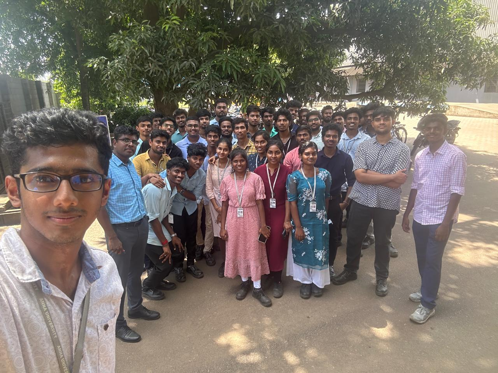
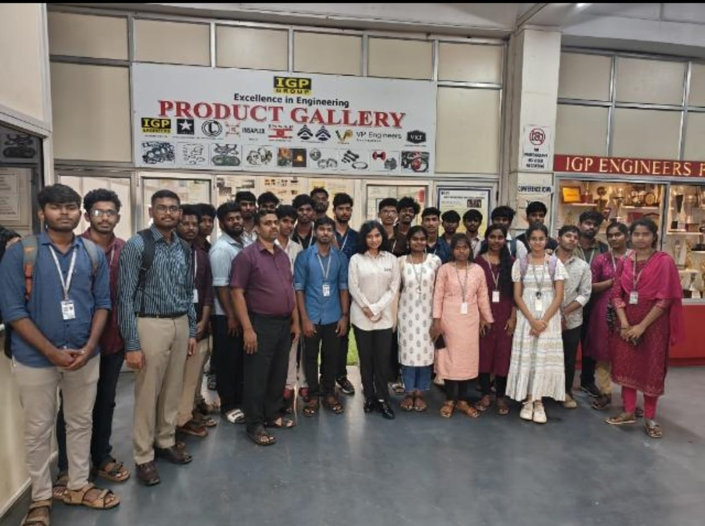
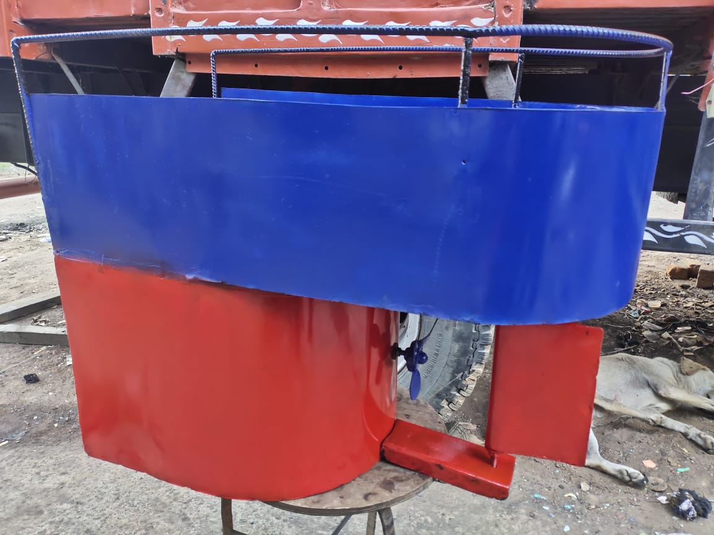
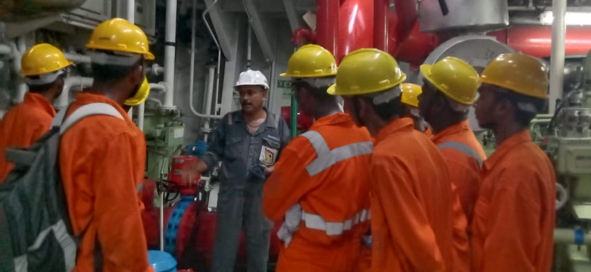

Hello, I'm Edwin Gnanaraj H
Passionate Mechanical Engineering student seeking an opportunity to apply my knowledge in CAD, tool design, and process flow analysis in a practical environment.

Meet Edwin Gnanaraj H
I am a dedicated Mechanical Engineering student driven by a passion for technical precision and innovative problem-solving. My focus lies in leveraging computational tools to optimize mechanical systems and process flows.
With an eye for detail and a passion for optimization, I've successfully led several cross-functional projects from initial concept through to final production. I specialize in mechanical systems, renewable energy, and automated manufacturing processes.
5+
Years Experience
20+
Projects Completed
10+
Certifications
Academic Journey
My foundational training and hands-on professional experiences.
Education
B.E Mechanical Engineering
College of Engineering, Guindy
CGPA: 6.5 (Current)
Diploma in Marine Engineering
Central Polytechnic College
Percentage: 88.22%
12th Standard (HSC)
Govt Higher Secondary School
Percentage: 71.33%
10th Standard (SSLC)
Govt High School
Percentage: 72.8%
Internships
Kamarajar Port Limited
Industrial Training (25 Days)
Gained practical exposure to port operations, mechanical maintenance, and industrial safety standards.
Technical Expertise
Proficient in industry-standard tools and methodologies for modern mechanical engineering.
AutoCAD 2D
Creo
SolidWorks
College Highlights & Memories
Capturing the journey, teamwork, and practical learning from my time at university.





Professional Certifications
Recognized industry credentials and specialized training completions.
Personal Interests & Disciplines
Activities and values that drive my personal growth and healthy lifestyle.
Travel Enthusiast
Exploring new horizons through long-distance train and bike journeys.
City Exploration
Discovering urban architecture, culture, and hidden landmarks across cities.
Badminton
Playing competitive and recreational badminton for agility and focus.
Fitness & Health
Consistent routine in jogging and gym training for physical resilience.
Personal Discipline
Maintaining strong punctuality and time management in all life commitments.